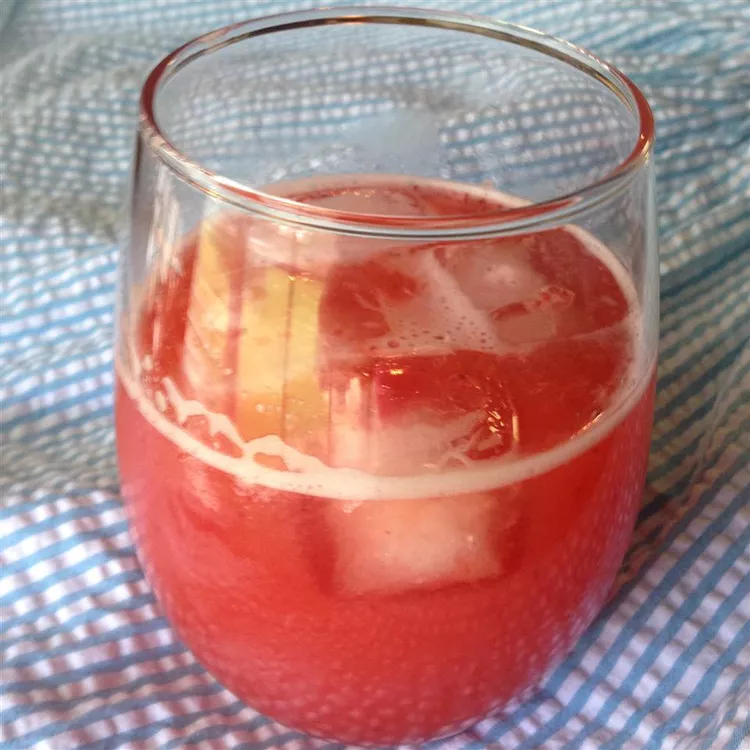

Strawberry Lemonade

Description
To make this refreshing drink is very simply.
You must add your frozen lemonade concentrate, water,
and frozen strawberries into a pitcher and stir.
Ingredients
- 1 (12 fluid ounce) can frozen lemonade concentrate, thawed
- 4 ½ cups water
- 1 (10 ounce) package frozen strawberries, partially thawed
Steps
- In a large pitcher, mix together lemonade concentrate and water. Stir in strawberries